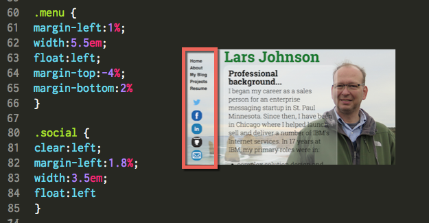

Positioning with CSS
Sept 28, 2015 -- It's absolutely relative!
tl;dr
Ok, I admit it. CSS Positioning still confuses me and I end up experimenting on a live web page either with Chrome DevTools or Sublime and LiveReload to get all of my elements positioned where I need them to be.
Overview
As I mentioned last week, Cascading Style Sheets (CSS) are siblings of the HTML document and where HTML can be used to create semantic structure, CSS enables a designer or developer to create beautiful visual layouts and simple user interactions.
As we started digging into CSS this week, I realized that much of it is pretty easy to understand and use. For example: if you want to give some words a light blue background, you identify them in your HTML and apply the CSS command, background-color:lightblue. If you want to give something a simple red border, you could use the command, border:2px solid red. Pretty cool right?
In fact, we can use CSS for much more than simple styling, we can also use it for document layout, simple animations (like highlighting menu items) and the realization of design thinking.
Location, location, location
So if basic styling is fairly straightforward with CSS, I would say it's the exact opposite (at least for me) when it comes to using CSS to locate or position something on a page. Actually, it's not too bad if you're just positioning a few items and you know the pixel dimensions of your end user's screen.
Of course that's almost never the case as these days our web sites can, and hopefully will, be viewed on a wide variety of devices. It's the reality of today's web, but let's ignore that aspect for a moment, and simply talk about how we might go about positioning items for viewing on a typical laptop. As you will see, it can still be tricky!
First of all, Static positioning is the default for all page elements which means those elements simply flow onto the page as they normally would. This is generally the order in which they appear in your HTML document.
Because static positioning is the default for all elements, it does not have to be declared unless you're resetting the positioning of one or more elements. By the way, these statically positioned elements normally flow from top to bottom on the page unless otherwise specified with a commands like, display:inline-block or float:left for example.
As you can see here, I used Static positioning by default and float:left for my website's 2 menu elements:

Absolute and Relative positioning can be quite a bit more confusing because from what I have read, (a) Absolute positioning actually means a specific position relative to the next non-static parent element, and (b) an item with Relative positioning is technically positioned "relative to itself."
In other words, if you specify relative positioning and top:20px, you could either find that element 20 pixels down from the top of the screen, or 20 pixels down from something else on the page. Absolute positioning is similar in that top:20% would normally mean 20% down from the top of the screen. However if the element you are moving is nested within another (non-static) element it will move 20% of the way down the height of that parent element and starting from the top of the parent.
Last but not least, using Fixed positioning allows us to place an element relative to the browser window or viewport which means it will not move as the user scrolls vertically or horizontally. While this can definitely be a virtue, it can also mean that your other elements will scroll over, under or through your Fixed items.
In conclusion
As we added CSS to our websites this week, I experimented with all 4 of these positioning methods and found them all to be a bit non-intuitive for me at this point. I would love to be able to translate a wireframe with multiple elements into a properly arranged web page either completely in my head or even with pencil and paper before making small refinements in DevTools. Even so, I really enjoyed the challenges this week and I look forward to getting more comfortable in CSS with lots of practice!